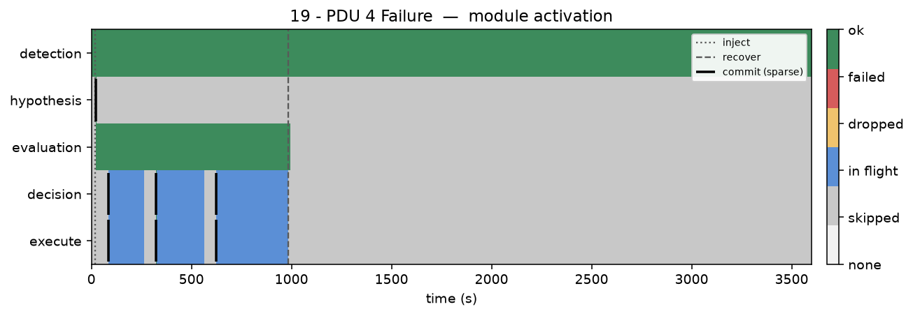
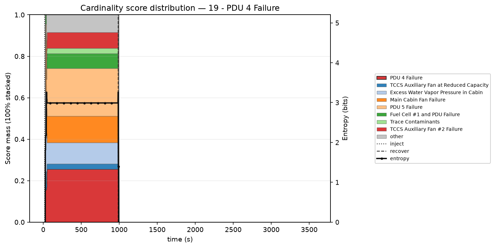

Module activation



| Hypothesis | P | T | P/T |
|---|---|---|---|
| 1. Main Cabin Fan Failure ▸ | 0.128 | 3 | 0.0426 |
| 2. TCCS Auxiliary Fan at Reduced Capacity ▸ | 0.026 | 4 | 0.0064 |
| 3. Reduced Main Cabin Fan #1 Capacity | 0.008 | 4 | 0.0019 |
| 4. PDU 4 Failure ★ ▸ | 0.256 | 6 | 0.0426 |
| 5. PDU 5 Failure | 0.230 | 6 | 0.0384 |
| 6. Emergency O2 System Maintenance | 0.000 | 8 | 0.0000 |
| 7. Fuel Cell Degrade | 0.000 | 8 | 0.0000 |
| 8. Fuel Cell Failure | 0.000 | 8 | 0.0000 |
| 9. CDRA LiOH Canister Saturation | 0.000 | 12 | 0.0000 |
| 10. Loss of Pressure | 0.000 | 12 | 0.0000 |
| 11. MOXIE Antenna Failure | 0.000 | 12 | 0.0000 |
| 12. MOXIE ECM Failure | 0.000 | 12 | 0.0000 |
| 13. MOXIE Fan Failure | 0.000 | 12 | 0.0000 |
| 14. N2 Tank Burst | 0.000 | 12 | 0.0000 |
| 15. RWGSR Malfunction | 0.000 | 12 | 0.0000 |
15 of 31 · ★ truth · ▸ attempted · highlight = first pick · P=0 if unscored at first decision
Sequence: Main Cabin Fan Failure → TCCS Auxiliary Fan at Reduced Capacity → PDU 4 Failure
TTR: 16.1 min · attempts 3 · wrong 2